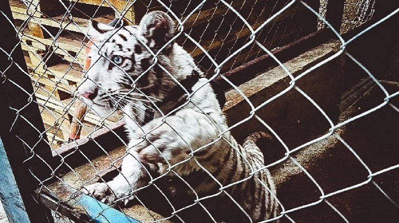
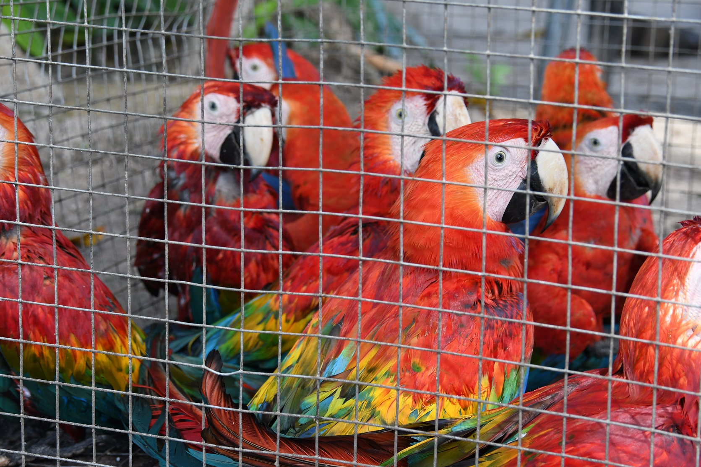

Como a COVID-19 é uma doença zoonótica, ou seja, pode ser transmitida entre animais e humanos, a China proibiu temporariamente o comércio de fauna silvestre em seu território, dando um descanso às espécies utilizadas tradicionalmente na cozinha e farmacopeia chinesa, incluindo algumas que fazem parte da Lista Vermelha da União Internacional para a Conservação da Natureza (UICN).
Os especialistas alertam há anos que para evitar catástrofes como a atual devemos manter uma relação mais saudável com o meio natural. Peter Ben Embarek, especialista em doenças animais da OMS, afirma que "estamos entrando em contato com novas espécies selvagens e habitats, portanto, estamos enfrentamos uma série de novas doenças relacionadas aos mesmos".
Mesmo com a redução na China, no Brasil ouve um aumento do tráfico de animais silvestres, e maus-tratos é mais um número que cresce durante a pandemia. Segundo a delegacia de proteção animal, só em São Paulo, de janeiro a novembro do ano passado, o crescimento no número de registros de infrações foi de 26,5%. Em 11 meses, foram quase 14 mil casos. Nesse mesmo período, só a Polícia Ambiental apreendeu 16.411 animais como macacos, aves e onças. Até setembro, o Ibama havia aplicado 1.536 autos de infrações por irregularidades contra os animais, somando multas que passam de 51 milhões de reais.
Araras apreendidas tentando ser traficadas.